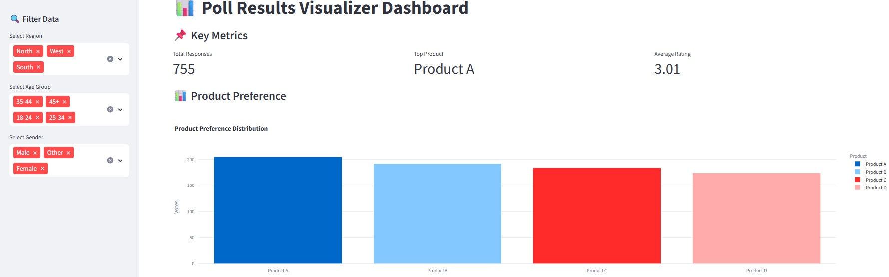
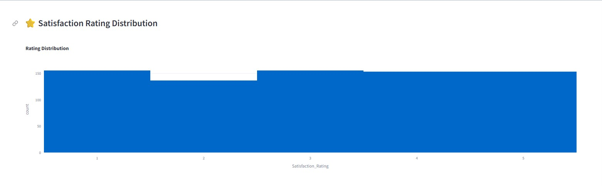
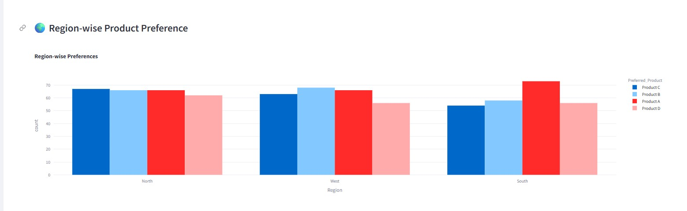
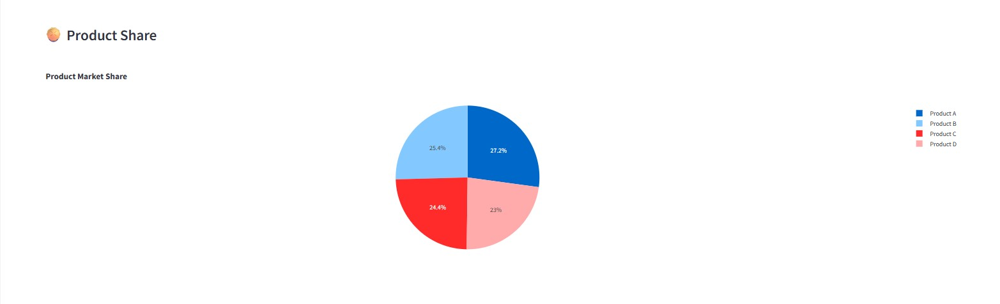
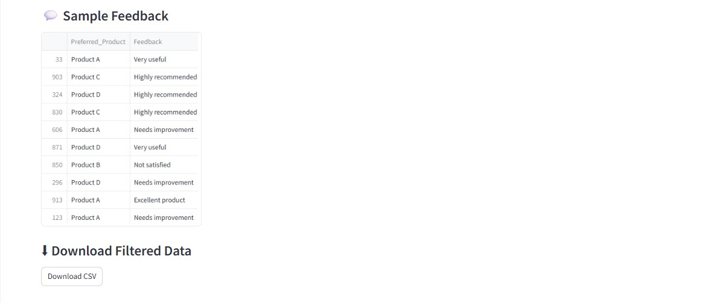
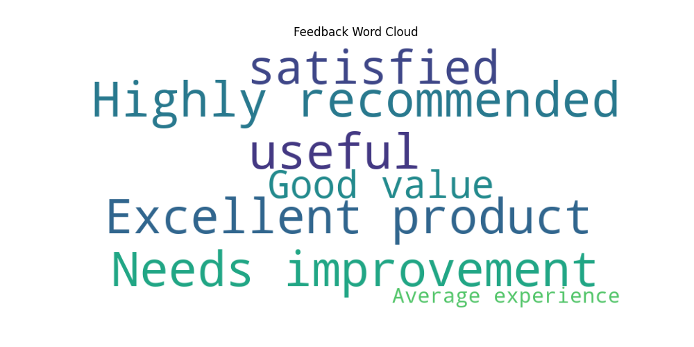
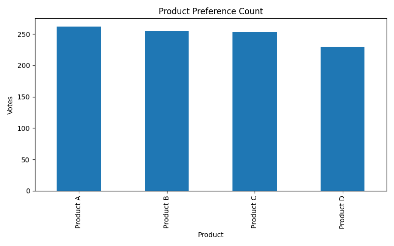
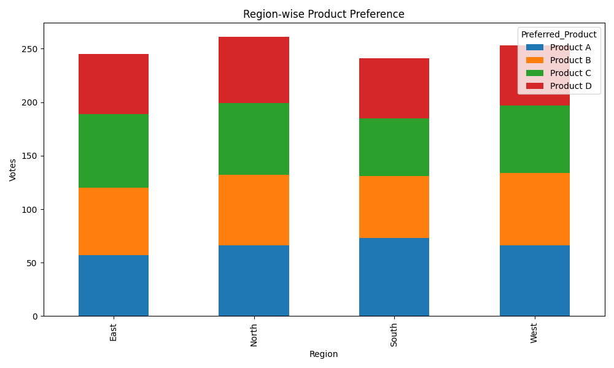

● Developed an interactive poll and survey analytics dashboard using Streamlit to visualize user responses dynamically.
● Implemented data cleaning, filtering, and statistical analysis to generate meaningful insights from poll datasets.
● Designed dynamic visualizations including bar charts, pie charts, region-wise comparisons, satisfaction histograms, and word clouds.
● Added interactive sidebar filters for region, age group, and gender to enhance user-driven data exploration.
Technologies: Python, Streamlit, Pandas, NumPy, Plotly, Matplotlib, Seaborn, WordCloud
CSV File Structure:
Respondent_ID,Timestamp,Age_Group,Gender,Region,Preferred_Product,Satisfaction_Rating,Feedback,Date
1,2024-01-19 01:44:00,35-44,Male,North,Product C,3,Not satisfied,2024-01-19
2,2024-02-08 19:14:00,45+,Male,North,Product B,5,Excellent product,2024-02-08
3,2024-03-25 22:08:00,18-24,Male,West,Product B,3,Highly recommended,2024-03-25
4,2024-02-12 18:01:00,45+,Other,West,Product A,4,Good value,2024-02-12
5,2024-01-16 23:16:00,45+,Female,West,Product B,1,Not satisfied,2024-01-16
6,2024-02-21 19:55:00,25-34,Male,West,Product B,2,Not satisfied,2024-02-21
7,2024-01-15 07:31:00,18-24,Other,South,Product A,2,Average experience,2024-01-15
8,2024-02-20 10:50:00,18-24,Male,South,Product D,5,Excellent product,2024-02-20
Project Files: Poll Results
Output:







